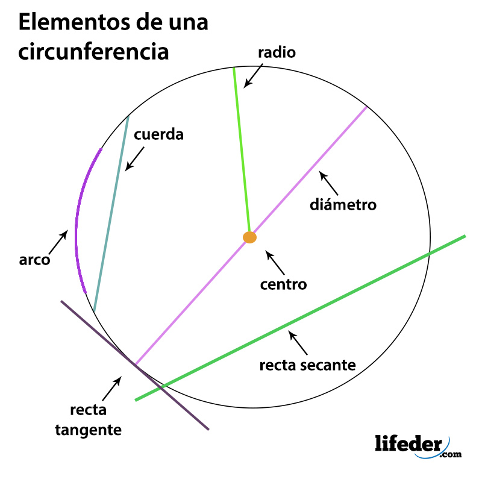
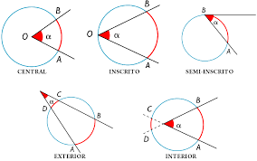
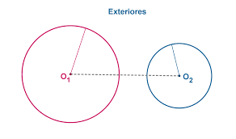
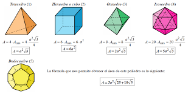

1st may, 2021
unidad uno circuferencia
La circunferencia es el lugar geométrico de los puntos que equidistan de un punto llamado centro. Un radio de una circunferencia es un segmento con extremos el centro de la circunferencia y un punto en el borde. Cuerda es un segmento cuyos extremos son puntos en la circunferencia.
El segmento circular es la parte de un círculo que se ubica entre la cuerda y el arco que se corresponde con un ángulo central. Es decir, el segmento circular es una sección de la circunferencia que se forma cuando se proyectan dos radios y se traza un segmento que los une (un arco).

1st may, 2021
teoremas y angulos
en la circuferencia hay varios angulos que se pueden crear y tienen su forma de encontarse un ejemplo puede ser el angulo central
El ángulo central tiene su vértice en el centro de la circunferencia y sus lados son dos radios. La medida de un arco es la de su ángulo central correspondiente. El ángulo inscrito tiene su vértice está en la circunferencia y sus lados son secantes a ella. Mide la mitad del arco que abarca.

1st may, 2021
polígonos inscritos y circunscritos
Polígono inscrito: Polígono que se halla dentro (en su región interior) de otra figura geométrica. Por ejemplo, un cuadrado ABCD inscrito en una circunferencia de centro O y radio OA (significa que el cuadrado está contenido dentro de la circunferencia).
Un polígono circunscrito es aquel polígono cuyos lados son tangentes a la circunferencia. Figura 1. Polígono inscrito y polígono circunscrito. El radio del polígono inscrito es el radio de la circunferencia circunscrita en él.

1st may, 2021
áreas y volúmenes, poliedro
El Área de los poliedros se calcula sumando las áreas de todas sus caras. Para este cálculo es necesario saber bien como se calcula el área de los Polígonos y de los Círculos. El Volumen de los poliedros se obtiene, de forma general, multiplicando el Area de la Base por la Altura..
El ortoedro es un poliedro cuyas 6 caras son rectángulos. El volumen del ortoedro se calcula multiplicando el ancho por el fondo y por la altura. La fórmula es válida tanto sea un prisma recto como un prisma oblicuo.
.
Un poliedro es, en el sentido dado por la geometría clásica al término, un cuerpo geométrico cuyas caras son planas y encierran un volumen finito. .
.